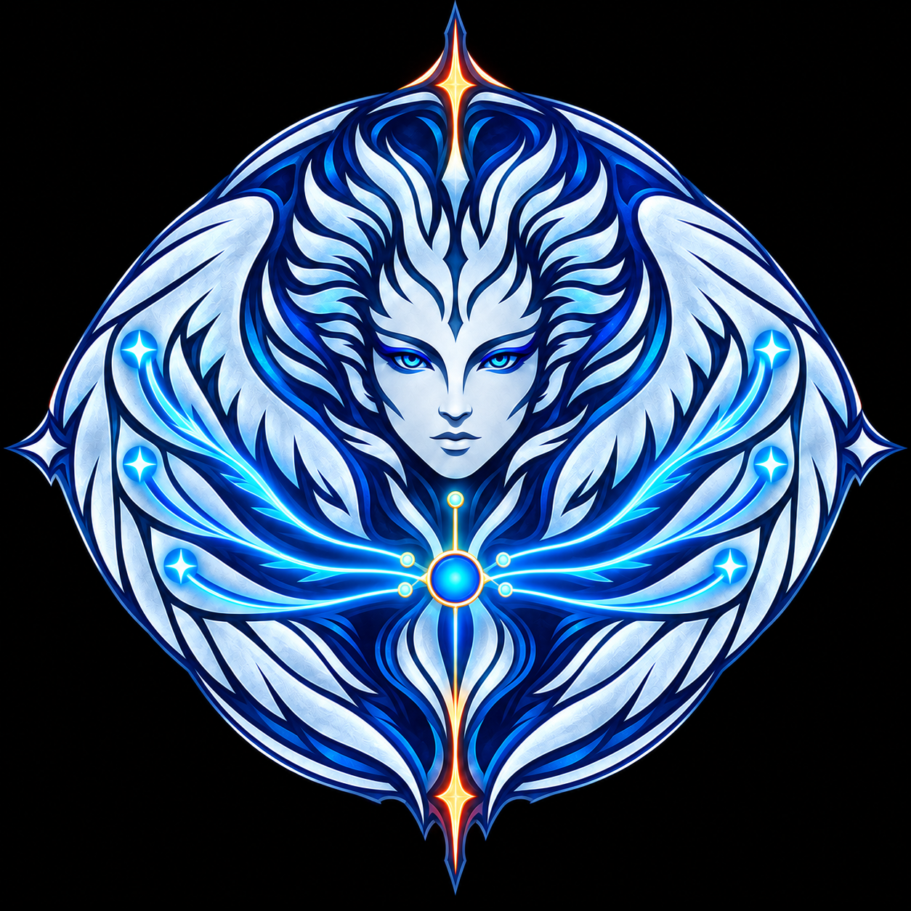

Adopted mark · size & color system
一位信使，
多处回响。
以《暴风雨》中 Ariel 化身鹰身女妖、在多处替 Prospero 传令的典故为核心。彩色与单色共用同一位神话信使：胸前唯一 relay core 向十处发令，单色稿只减线，不换形象。
- 01人物保持中性、冷静，不做天使、女神或攻击性怪物。
- 02彩色只存在于神话主版，不再派生卡通化产品彩色稿。
- 03单色稿保留面孔、羽翼与十路传令，只删除纹理、光影和重复羽线。

Mythic vivid · social / launch同一位神话信使，三种媒介表达。
彩色主版负责完整叙事；深墨与反白单色版都由原始神话形象直接减线而来，不再保留独立的产品彩色版本。




尺寸不是缩放问题，而是细节切换。
以最终显示宽度为准，不以源文件像素为准。跨越阈值时替换资产，不对复杂主版做无限缩小，也不把微标放大成主视觉。
神话主版
保留完整绘制、明暗层次与风暴氛围。适合需要先讲清典故、再建立品牌记忆的高关注场景。
简化单色神话版
人物、羽翼、风暴尖角与十路传令全部保留；删除材质纹理、渐变光效、重复轮廓和过细羽线。
神话微标
不再缩小人物五官，只提取上下风暴尖角、双翼包围和中心六路分发，严格保持单色。
净空与裁切
把中心 relay core 的直径定义为 1×。任何文字、边框、头像裁切或相邻图形，都不得侵入这圈保护区。
四周至少留 1×
净空规则统一适用于彩色神话主版与简化单色神话版。方形头像允许让外轮廓占画布宽度的 72%—78%，但必须完整保留上下风暴尖角与两侧端点。
- 1×中心 relay core 的完整直径；这是最小净空单位。
- 头像Logo 视觉占比 72%—78%，居中，不裁切外轮廓。
- 与字标图形与 “Ariel” 间距为 0.75×；字标垂直居中于徽记。
- 禁止不可只截取人物脸部，不可压扁，不可旋转，不可把端点挪出外框。
色彩承担语义，不承担装饰。
午夜、饱和蓝与冷银构成人物；蓝青描述“正在传令”；金色标记命令源，珊瑚只勾勒两处风暴闪光。绘画感神话主版允许明暗变化，工程色值以这组锚点色为准。
Night Canvas
#02040A
oklch(10.71% 0.0194 262.03)
Tempest Navy
#071A3D
oklch(22.63% 0.0719 261.12)
Wing Cobalt
#0B4F9C
oklch(43.53% 0.1404 256.01)
Storm Silver
#F2FAFF
oklch(98.05% 0.0108 234.81)
Relay Azure
#00A8FF
oklch(70.26% 0.1696 242.92)
Air Cyan
#63F4FF
oklch(89.33% 0.1238 202.21)
Command Gold
#FFC247
oklch(84.87% 0.1508 81.27)
Tempest Coral
#FF5A47
oklch(68.57% 0.2038 29.77)
鲜明彩色版
优先放在 Night Canvas 或深靛背景上。Relay Azure 只用于中心、传令风路和端点；与 Night Canvas 的对比度为 7.85:1。Command Gold 只标记命令源。
浅底单色
使用 Deep Ink #111827，背景建议为白色或中性浅灰；对白对比度为 17.74:1。不得保留蓝色端点。
深底反白
使用 Light Ink #F7F9FC，与 Night Canvas 的对比度为 19.44:1。严格一色，不依赖半透明和灰阶。
场景选择表
先看最终显示尺寸，再看背景与媒介。若尺寸与叙事需求冲突，以清晰度优先。
| 场景 | 推荐尺寸 | 版本 | 背景 / 色彩 | 资产 |
|---|---|---|---|---|
| README 首图 / 发布封面 | ≥ 320 px | 神话鲜明彩色主版 | Night Canvas | ariel-logo-mythic-color.png |
| 社交头像 / GitHub Org | 320—1024 px | 神话彩色主版 | 深色方形画布 | ariel-logo-mythic-color.png |
| README 中等展示 / 登录页 | 128—319 px | 简化单色神话版 | 按背景选择深墨或反白 | ariel-logo-mythic-ink.png / ariel-logo-mythic-white.png |
| Web 控制台导航 | 24—64 px | 单色神话微标 | 按背景反相 | ariel-logo-micro.svg |
| Favicon / 状态栏 | 16 / 32 / 48 px | 单色神话微标 | 黑白均可 | ariel-logo-micro.svg |
| 浅色文档 / 印刷 | ≥ 128 px / ≥ 24 mm | 神话单色深墨版 | 白或中性浅灰 | ariel-logo-mythic-ink.png |
| 深色终端 / 水印 | ≥ 128 px | 神话单色反白版 | 黑或深靛 | ariel-logo-mythic-white.png |
放进真实场景，仍然是 Ariel。
同一套识别不追求“所有尺寸完全一样”，而是保持四个不可丢的基因：菱圆外轮廓、中性面孔、翼形包围、中心向多处传令。
ACTIVE SESSIONMac Studio → iPhone → Web
识别靠轮廓，记忆靠传令。
头像裁切保留完整菱圆边界，不单独裁人物脸部。
使用边界
这枚徽记的复杂度来自神话叙事，不来自装饰。控制色彩与尺寸，才能让它既像古老使者，也像现代 relay service。
彩色只属于神话主版
不再制作独立产品彩色稿。需要色彩时使用完整神话主版；日常识别、文档与受限媒介统一使用单色神话稿。
跨阈值就换细节层级
320 px 以下切换简化单色神话版，128 px 以下切换单色 micro。不要锐化或加粗人物五官来挽救错误尺寸。
至少留一个核心直径
Logo 四周净空不得小于中心 relay core 的直径。头像中不可切断上下风暴尖角。